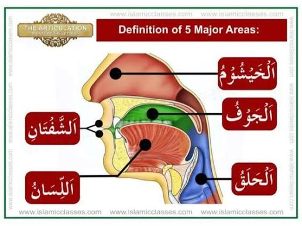

📌 اضغطي على أي مخرج من الأزرار أعلاه
عند الضغط على المخرج تحت الصورة ستظهر حروفه والتفاصيل هنا فوراً.
🔤 اختر الحرف مباشرة:
اضغط على أي حرف من الأزرار أعلاه لفتح تفاصيله.
📌 الصفات ذات الضد:
📌 الصفات التي ليس لها ضد:
اضغط على أي صفة من القائمة لعرض تفاصيلها واللحن الشائع منها.